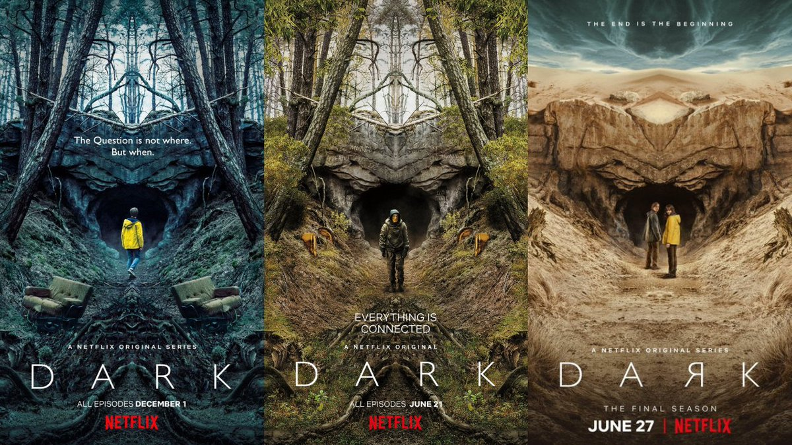

A série DARK é de origem alemã e foi lançada na plataforma de streaming, Netflix, no ano de 2017 pelos showrunners Baran bo Odar e Jantje Friese, sendo seu planejamento para o lançamento de 3 temporadas (todas já lançadas). O enredo envolve viagens no tempo e entre realidades alternativas, ficção científica e tragédias de modo geral. A primera temporada se inicia com o desparecimento de alguns jovens diante de uma caverna, que futuramente se descobre ser uma máquina do tempo. Personagens com o Mikkel, Jonas, Martha, Ulrik e Michael vão ganhando relevância de forma continua e uniforma com o passar dos episódios.
Com a famosa frase "tudo está conectado" posta em cheque desde o primeiro episódio, a série conta com um enredo muito bem construído e faz com que cada detalhes seja importante para a compreensão dos acontecimento, PORTANTO PRESTE MUITA ATENÇÃO NAS PASSAGENS DE TEMPO!!. Com uma trama envolvente, talvez conte com a árvore genealógica de personagens mais confusa criada para uma série. Assista agora ao teaser da terceira temporada clicando no nome da série no topo da página!
Chamada "Goodbye" pertence a banda alemã Appart. Sons distoricidos remetem a dobras no espaço tempo.
Veja a traduçãoA série traz muitas referências a franquia "De volta para o Futuro", desde citações até um próprio cientista maluco.
Saiba mais!As viagens no tempo exigiram atores para interpretar personagens em diferentes idades. O que mais impressiona é a semelhanças físicas entre eles, e claro A ATUAÇÃO!
Confira os testes de elencoDe "Sic Mundus" até Noé. Entenda as correlações entre a trama e os aspectos religiosos de diferentes culturas.
Fique por dentro!A netflix lançou um site com um guia oficial sobre a série contendo informações de cada episódio da série SEM SPOILER. Ele pode te ajudar e muito para entender o parentesco entre os personagens durante os saltos das viagens no tempo.
Acesse o guia clicando aquiDark foi eleita a melhor série de 2020 como resultadoo de votação popular no Rotten Tomatoes, ultrapassando sucessos como Black Mirror, Stranger Things e Peaky Blinders.
Acesse a matéria completa